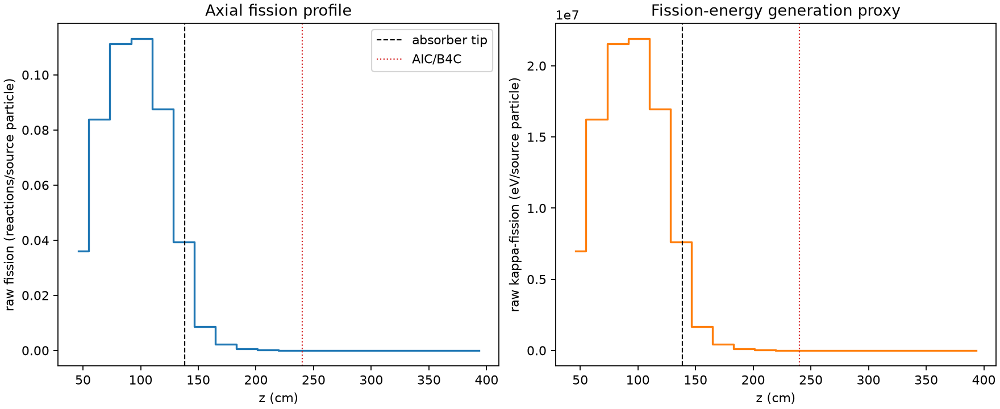
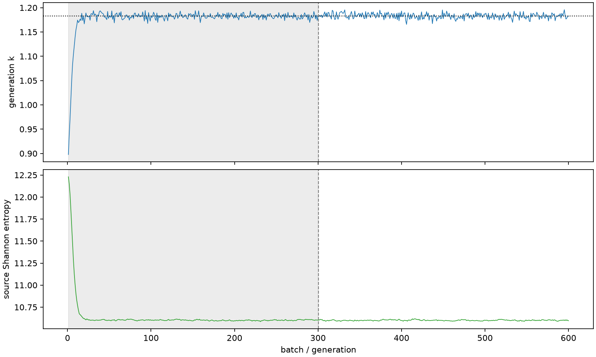

| field | value |
|---|---|
| experiment | V2-STAGE_256_OGRENCI_03-0031 |
| k | 1.18297824873228 |
| MC standard error | 0.0001916793106318496 |
| seconds | 909.8127697000018 |
| acceptance | not_assessed |
| convergence | review_required |
Completed is output integrity only; physical and statistical review required. Zero tallies do not prove zero production or zero uncertainty.
| diagnostic | value |
|---|---|
| geometric fuel voxels | 5280 |
| zero fission tally voxels | 1544 |
| low signal fuel voxels | 2626 |
| low signal fission share | 0.00010426112979130995 |
| low signal kappa share | 0.00010430158047673516 |
| important fission share | 0.9501757851419846 |
| previous filter included | 2654 |
| duration estimate s | 1562.5173488400023 |
| actual minus estimate s | -652.7045791400005 |
| fission relative MC error | statistics |
|---|---|
| all_geometric_fuel | {"voxels": 5280, "positive_mean_voxels": 3736, "zero_mean_voxels": 1544, "undefined_relative_error_voxels": 1544, "median": 0.03171912783899275, "p95": 0.8977600399362441, "maximum": 1.0000000000000002} |
| low_signal | {"voxels": 2626, "positive_mean_voxels": 1082, "zero_mean_voxels": 1544, "undefined_relative_error_voxels": 1544, "median": 0.5570582209301799, "p95": 1.0, "maximum": 1.0000000000000002} |
| important_95pct | {"voxels": 1490, "positive_mean_voxels": 1490, "zero_mean_voxels": 0, "undefined_relative_error_voxels": 0, "median": 0.0058023214976627826, "p95": 0.009140423518204167, "maximum": 0.01037567919624745} |
| outside_previous_filter | {"voxels": 2626, "positive_mean_voxels": 1082, "zero_mean_voxels": 1544, "undefined_relative_error_voxels": 1544, "median": 0.5570582209301799, "p95": 1.0, "maximum": 1.0000000000000002} |
| kappa_fission relative MC error | statistics |
|---|---|
| all_geometric_fuel | {"voxels": 5280, "positive_mean_voxels": 3736, "zero_mean_voxels": 1544, "undefined_relative_error_voxels": 1544, "median": 0.03167432187487559, "p95": 0.8968800339450782, "maximum": 1.0000000000000002} |
| low_signal | {"voxels": 2626, "positive_mean_voxels": 1082, "zero_mean_voxels": 1544, "undefined_relative_error_voxels": 1544, "median": 0.5569356051496339, "p95": 1.0, "maximum": 1.0000000000000002} |
| important_95pct | {"voxels": 1490, "positive_mean_voxels": 1490, "zero_mean_voxels": 0, "undefined_relative_error_voxels": 0, "median": 0.0057953818689182104, "p95": 0.009130198675702703, "maximum": 0.010364283499353737} |
| outside_previous_filter | {"voxels": 2626, "positive_mean_voxels": 1082, "zero_mean_voxels": 1544, "undefined_relative_error_voxels": 1544, "median": 0.5569356051496339, "p95": 1.0, "maximum": 1.0000000000000002} |
| axial bin | fission share | kappa-fission share |
|---|---|---|
| 1 | 0.07444262709953137 | 0.07444501197270087 |
| 2 | 0.17379607092983224 | 0.17379300557273117 |
| 3 | 0.23042954460390097 | 0.23042504042472334 |
| 4 | 0.23409428180042616 | 0.23408977529893815 |
| 5 | 0.1814649652380042 | 0.18146172970453095 |
| 6 | 0.08148562323459896 | 0.08149081073463224 |
| 7 | 0.017951540651754264 | 0.017957186467048837 |
| 8 | 0.004680344885181505 | 0.004681877287853197 |
| 9 | 0.0012254529632163237 | 0.0012258566391445008 |
| 10 | 0.0003202278263116782 | 0.00032034329008986934 |
| 11 | 8.24026058150645e-05 | 8.243605764114237e-05 |
| 12 | 2.0440436244387725e-05 | 2.0447562721868007e-05 |
| 13 | 4.88513475130233e-06 | 4.885431215038982e-06 |
| 14 | 1.5280076657795085e-06 | 1.5288528770227847e-06 |
| 15 | 6.458276588780948e-08 | 6.47031516922816e-08 |
| 16 | 0.0 | 0.0 |
| 17 | 0.0 | 0.0 |
| 18 | 0.0 | 0.0 |
| 19 | 0.0 | 0.0 |
| 20 | 0.0 | 0.0 |
Histories include the inactive-to-active transition at batch 300. kappa-fission approximates fission energy production, not total heat deposition.

